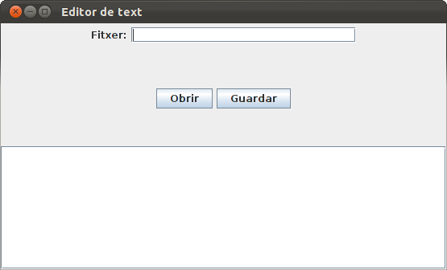

Exercicis
Exercici 2_1
Aquest primer exercicis és per a tractament de bytes, ja que es tractarà de modificar una imatge. Per a poder provar-lo podeu utilitzar la imatge Penyagolosa.bmp que se us proporciona en l'aula virtual i l'heu de copiar al directori arrel del projecte Tema2 per a un funcionament més còmode.
No es pretén construir un editor d'imatges. Tan sols pretenem agafar la informació del fitxer byte a byte, realitzar alguna transformació en els bytes i guardar-la en un altre fitxer.
El format d'un fitxer bmp, aproximadament és el següent:
- En els 54 primers bytes es guarda informació diversa, com la grandària de la imatge, paleta de colors, ...
- A partir d'ahí es guarda cada punt de la imatge com 3 bytes, un per al roig (R), un per al verd (G) i i un per al blau (B), anant d'esquerra a dreta i de dalt a baix.
Copia't i modifica la classe FitxerImatge en el paquet exercicis, creant els mètodes oportuns seguint aquestes pautes:
- El constructor FitxerImatge(File fEnt) ha d'inicialitzar la propietat f (File) si i només si existeix el fitxer i l'extensió del fitxer és .bmp (ho controlarem senzillament perquè el nom del fitxer acaba així). En cas contrari, traure els missatges d'error oportuns per l'eixida estàndar.
- Els mètodes de transformació (transformaNegatiu, transformaObscur i el voluntari transformaBlancNegre) han de crear un nou fitxer que contindrà la imatge transformada com veurem més avant. El nom del nou fitxer s'ha de formar a partir del nom del fitxer d'entrada, el que hem guardat en el constructor. Serà sempre posant abans del .bmp un guió baix i un identificatiu de la transformació realitzada: _n per al negatiu, _o per a l'obscur i _bn per al blanc i negre (part voluntària). És a dir, si el fitxer d'entrada fóra imatge1.bmp, el d'eixida haurà de ser:
- imatge1_n.bmp per al mètode transformaNegatiu
- imatge1_o.bmp per al mètode transformaObscur
- imatge1_bn.bmp per al mètode voluntari transformaBlancNegre
- En cada transformació, els primers 54 bytes s'han de copiar sense modificar: s'han d'escriure en el fitxer de destí tal i com s'han llegit del fitxer d'entrada
- A partir del 54, cada vegada que es llegirà un byte, s'haurà de transformar abans d'escriure'l en el destí. La transformació és d'aquesta manera:
- Per al negatiu (transformaNegatiu), cada byte de color (RGB) de cada punt, s'ha de transformar en el complementari. Com estem parlant de bytes però que en llegir els guardem en enters, senzillament serà calcular 255 - b (si b és el byte llegit).
- Per a l'obscur (transformaObscur), cada byte de color (RGB) de cada punt, s'ha de baixar d'intensitat a la meitat. Senzillament serà calcular b / 2 (si b és el byte llegit).
- Per al blanc i negre (transformaBlancNegre), que és el voluntari, hem de donar el mateix valor per al roig, el blau i el verd (RGB) de cada punt, i així aconseguirem un gris d'intensitat adequada. Una bona manera serà llegir els tres bytes de cada punt (no s'aconsella utilitzar una lectura amb un array de 3 posicions; millor fer tres lectures guardades en tres variables diferents), calcular la mitjana d'aquestos 3 valors, i escriure el resultat 3 vegades en el fitxer de destí.
- En cap dels casos anteriors es recomana la lectura dels bytes en un ByteArray, perquè podeu tenir resultats imprevisibles a causa de la interpretació numèrica (i per tant amb signe, cosa que en aquest cas no té sentit, ja que han són números del 0 al 255). Es recomana vivament llegir byte a byte.
A mode orientatiu del que es vol fer, us adjunte la classe FitxerImatge a la qual heu de modificar el constructor i els tres mètodes de transformació (l'últim és voluntari). Recordeu que ha d'anar al paquet exercicis.
package exercicis
import java.io.File
class FitxerImatge(fEnt: File) {
var f: File = File("") // No modifiqueu aquesta línia. El seu valor s'ha de modificar en el constructor
init {
// Constructor
// Control d'existència del fitxer i control de l'extensió .bmp (traure missatges d'error)
// En cas que tot siga correcte, inicialitzar f amb fEnt
}
fun transformaNegatiu() {
// Transformar a negatiiu i guardar en _n.bmp
}
fun transformaObscur() {
// Transformar a una imatge més fosca i guardar en _o.bmp
}
/* Partvoluntària
fun transformaBlancNegre() {
// Transformar a una imatge en blanc i negre i guardar en _bn.bmp
}
*/
}Aquest seria un exemple de programa principal, que podeu utilitzar si voleu. Recordeu que ha d'anar al paquet exercicis i li podeu donar el nom Exercici_2_1.kt.
package exercicis
import java.io.File
fun main(args: Array<String>){
val f = File("Penyagolosa.bmp")
val fi = FitxerImatge(f)
fi.transformaNegatiu()
fi.transformaObscur()
//voluntari
//fi.transformaBlancNegre()
}Per a la imatge que se us proporciona (i que està en la construcció del File del programa principal), que és la de l'esquerra, haurien d'eixir les de la dreta:
| Imatge inicial | negatiu | obscur | blanc i negre (voluntari) |
 |
 |
||
| Penyagolosa.bmp | Penyagolosa_n.bmp | Penyagolosa_o.bmp | Penyagolosa_bn.bmp |
Exercici 2_2
Aquest programa serà el primer que utilitzarà components gràfics.
Per a entendre els components gràfics de la llibreria Swing i els contenidors de la llibreria Awt, que són els que utilitzarem, us aconselle que us mireu l'annex Gràfics en Java: llibreries AWT i SWING que teniu en la secció d'annexos, al final del curs de Moodle. De tota manera, us proporcione "l'esquelet" del programa, i només us demane que feu les sentències de quan s'apreten els botons d'obrir i de guardar.
Anem a fer un senzill editor de text amb el següent aspecte:

En el JTextField de dalt posarem el nom (i ruta) del fitxer.
- Quan apretem al botó Obrir ha de bolcar el contingut del fitxer al JTextArea (controlant prèviament que existeix el fitxer).
- Quan apretem a Guardar, ha de bolcar el contingut del JTextArea en el fitxer (el nom del qual tenim en el JTextField).
L'esquelet del programa és el que trobareu a continuació. He utilitzat la filosofia de l'annex, que consisteix a tenir al final de tot el programa principal (el main) que invoca amb posterioritat (invokeLater l'únic) una funció que crea l'objecte de la classe que hereta de JFrame, que és realment la finestra, i la fa visible.
Una vegada copiat en el paquet Exercicis del projecte Tema2 per exemple amb el nom Exercici_2_2.kt, només heu de completar el que teniu al final de tot d'aquesta classe on estan els comentaris, és a dir els mètodes addActionListener dels boton obrir i guardar
package exercicis
import javax.swing.*
import java.awt.*
class Exercici_2_2_Pantalla : JFrame() {
val et_f = JLabel("Fitxer:")
val fitxer = JTextField(25)
val obrir = JButton("Obrir")
val guardar = JButton("Guardar")
val et_a = JLabel("Contingut:")
val area = JTextArea(10, 50)
val scrollPane = JScrollPane(area)
// en iniciar posem un contenidor per als elements anteriors
init {
defaultCloseOperation = JFrame.EXIT_ON_CLOSE
setLayout(GridLayout(2, 1))
setTitle("Editor de text")
val panell1 = JPanel(GridLayout(0, 1))
val panell1_1 = JPanel(FlowLayout())
panell1.add(panell1_1)
panell1_1.add(et_f)
panell1_1.add(fitxer)
val panell1_2 = JPanel(FlowLayout())
panell1.add(panell1_2)
panell1_2.add(obrir)
panell1_2.add(guardar)
val panell2 = JPanel(GridLayout(0, 1))
panell2.add(scrollPane)
area.setEditable(true)
add(panell1)
add(panell2)
pack()
obrir.addActionListener {
// Instruccions per a bolcar el contingut del fitxer en el JTextArea
}
guardar.addActionListener {
// Instruccions per a guardar el contingut del JTextArea al fitxer.
}
}
}
private fun crearMostrarFinestra() {
val frame = Exercici_2_2_Pantalla()
frame.isVisible = true
}
fun main(args: Array<String>) {
EventQueue.invokeLater(::crearMostrarFinestra)
}Exercici 2_3. Voluntari
Com a exercici voluntari us propose una altra versió del Editor de Text de l'anterior exercici.
Ara serà únicament un JTextArea, i les opcions les tindrem en menú. Utilitzeu el component JFileChooser per a buscar fitxers i per a guardar-los que ens proporciona Swing. Ja teniu implementada l'opció d'eixir.

Si teniu temps i ganes, afegiu un component baix de tot per a triar la codificació entre UTF-8 i ISO-8859-15
Aquest seria l'esquelet del programa principal i la classe que implementa JFrame. El podeu guardar per exemple en Exercici_2_3.kt:
package exercicis import javax.swing.* import java.awt.* import java.io.File class Exercici_2_3 : JFrame() { val area = JTextArea() val scrollPane = JScrollPane(area) val menu_p = JMenuBar() val menu_arxiu = JMenu("Arxiu") val menu_ajuda = JMenu("Ajuda") val obrir = JMenuItem("Obrir") val guardar = JMenuItem("Guardar") val guardarCom = JMenuItem("Guardar com ...") val eixir = JMenuItem("Eixir") val quantA = JMenuItem("Quant a Editor") val fCh = JFileChooser() // en iniciar posem un contenidor per als elements anteriors init { defaultCloseOperation = JFrame.EXIT_ON_CLOSE setLayout(BorderLayout()) setTitle("Editor de text més avançat") add(scrollPane) area.setEditable(true) setSize(750, 400) setJMenuBar(menu_p) menu_p.add(menu_arxiu) menu_p.add(menu_ajuda) menu_arxiu.add(obrir) menu_arxiu.add(guardar) menu_arxiu.add(guardarCom) menu_arxiu.add(JSeparator()) menu_arxiu.add(eixir) menu_ajuda.add(quantA); obrir.addActionListener { obrir() } guardar.addActionListener { guardar() } guardarCom.addActionListener { guardarCom() } eixir.addActionListener { eixir() } quantA.addActionListener { quantA() } } fun obrir() { // Instruccions per a obrir un fitxer i posar el contingut en el JTextArea } fun guardar() { // Instruccions per a guardar el contingut del JTextArea al fitxer. } fun guardarCom() { // Instruccions per a guardar el contingut del JTextArea al fitxer, amb la possibilitat de canviar el nom } fun eixir() { // Instruccions per a eixir System.exit(0) } fun quantA() { // Instruccions per a mostrar un diàleg amb la versió (Acerca de...) } } fun main(args: Array<String>) { EventQueue.invokeLater( { Exercici_2_3().isVisible = true }) }
Llicenciat sota la Llicència Creative Commons Reconeixement NoComercial CompartirIgual 2.5